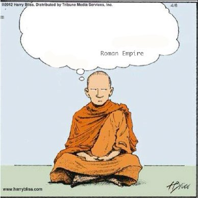

–Comment on Facebook
Last week on Facebook, I jumped on a viral trend and asked, “Male friends specifically- how often do you think about the Roman Empire?”
Seeing that post, you may have thought, “Et tu, Judy?”
After all, here at the Mind-Tickler Forum, the usual conversation is about self, mind, consciousness, reality, free will, feelings. Why waste this week’s Tickler on the Roman Empire, of all things?
Besides, why is it even a trend to ask men if they think about the Roman Empire in the first place?
Well, rarely do we ask people to expose what they think about on a regular basis.
So when we do ask, apparently it's fascinating to discover that others have different thoughts than we do.
Not to mention, how else could it have been discovered that gladiators, aquaducts, emperors, the width of train tracks, and the state of empires fill the minds of many thousands of folks, daily, weekly, monthly.**
Wait. Fills the minds, you say?
Well yes. Because whether it’s Romans or Greeks or Vikings or World War II or Mayans…
or whether it’s enlightenment, reality, awareness, consciousness…
or whether it’s when the next drink is coming or if we should have made that golf shot or what’s happening on our phone…
even if it’s just an annoying song stuck in our head…
thinking is happening.
Even meditators who think they slow or stop thoughts, still have to think in order to know what those thoughts are doing.
Fast or slow, the mind must be filled.
The subject matter it is filled with?
Irrelevant.
Any topic will do.
Ruminating about the Roman Empire works equally as well as having a song stuck in the head.
Mind, happily filled with busy-work.
And then as an extra bonus, all that thinking creates identity.
We know who and what we are, based on the particular stories focused on.
“I’m the one who thinks about important subjects such as Roman history, or awareness, or free will.”
Thinking convinces us that we’re a person.
“Here I am, thinking about modern politics compared to the fall of the Roman Empire.”
“Here I am, stopping my thoughts, attaining equanimity, connecting with higher consciousness.”
“Here I am, feeling, and then thinking about that feeling.”
“Here I am, reviewing how I handled that game, that meeting, that social occasion, that relationship.”
Here I am. Right here.
A person. Of “substance.”
Rumination on any topic provides that supposed substance.
Self. Identified by thoughts.
Never mind that thoughts contain no substance themselves.
They're nothing.
So when the self depends on that nothing in order to prove its existence, well, that’s an odd kind of real.
Meanwhile, in all the focus on thinking's subject matter, what usually goes unnoticed is the repetition.
It's always the same subjects and the same thoughts showing up for each individual.
“I’m alone.” “I’m not good enough.” “I need to understand no-self.” “The Roman Empire was important.”
Over and over and over and over.
Because thinking is not original, not creative.
At all.
It learns something and then hangs on to bits of that learning, for a lifetime.
Repeating, repeating, repeating, repeating.
Practicing. Making sure its favorite stories show up frequently enough to become, and then remain, rote, natural, effortless.
Exactly the same way a child learns language.
Blah blah Roman Empire blah blah ME blah Unmotivated blah Full Potential blah Unlovable blah Something Wrong blah Enlightened blah Was Marcus Aurelius a good Emperor.
Mind, practicing repetitious strings of words.
Regurgitating, like Romans in the vomitorium, the same stuff all day every day.
In order to convince us we are real and separate.
After all, thought says so.
Even though it is nothing, talking about nothing, describing nothing, using words which are nothing.
And therefore, proving nothing.
Still, all roads lead to Rome.
Thought has to think.
One thought is as good as the next.
It doesn’t matter what they’re about.
It doesn’t even matter if there’s a person thinking them.
Thumbs up or thumbs down,
It’s all the same
substance.
** (if you're in the mood for a laugh, watch till the end.)
https://www.tiktok.com/@ambarrail/video/7278682791531908398?_r=1&_t=8fnSA5pEbao
